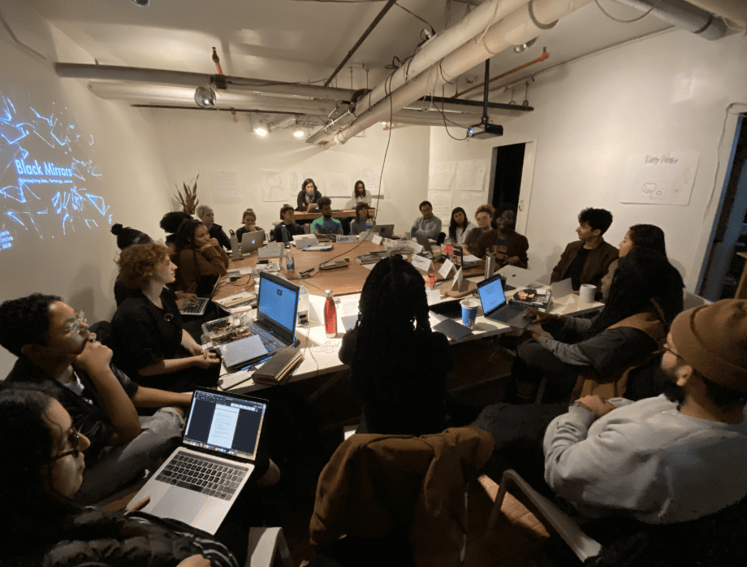

Our guest for the day, Ruha Benjamin, asked us to share our thoughts to the class title, “Black Mirrors: Reimagining Race and Technology,” and Toni Morrison’s words, “All paradises are designed by who is not there, by the people who are not allowed in.” Some saw Blackness as all encompassing; as a mirror that reflects society and if we protect and care for Black people, then the rest of society will also be protected. Ruha argued that one can be both excluded and included in the system’s design and that it is important to both question and wrestle with this intertwining.
We listened to Ruha’s words intently and were equally excited to do some of this wrestling and imagine other possibilities. Her idea, that race is productive, gave many of us a new way of understanding race and racism. It is not “just a word,” or a feeling towards a group of people that is different from the rest of society. Racism is clever and necessary, so much so that social inputs, the fragmented imagination of others, shape how we perceive race and thus, create technology. For example, previously called Vigilante, the Citizen app explicitly adheres to, and creates social codes for how people should see (or avoid) others in their imagined and lived space. What tools exist for Black people to decode the technologies that encode them and the places they inhabit? Building off of Michelle Alexander’s The New Jim Crow, Ruha’s “The New Jim Code” gives us new language and perspective to better understand the relationship between race and technology as we know it today. Engineered inequity, Default discrimination, Coded exposure and Techno benevolence are the four sites that give name and definition to the indifference to social realities new technologies or companies take on and how assuming race neutrality can also continue to perpetuate systems of inequity and domination.
“To see things as they really are, you must imagine what they might be.”
- Derrick Hall
Ruha named a number of organizations aiming to combat The New Jim Code: Tech Workers Coalition, Close the Camps NYC, Detroit Community Technology Project, Data for Black Lives, and us at SFPC, where we engage and approach technology by unlearning it first. This requires a commitment to understanding how systems of oppression and domination work and how they came to technology, and also fostering emotional intelligence amongst each other. We began to do these two tasks as we expanded on notions of safety, inclusion and exclusion, and the technologies that create them. What if we created our own herd immunity by simply saying hello to our neighbors, especially in gentrified communities? What would creating our own barricades (not out of bodies) to protect mothers and children from militarization look like? Along this same thread, we talked about the possibilities of futures (Chicanx, Afro, namely) and how they may not share the same goal or approach. How do we contend with creating more opportunities for people of color to join the tech world as a labor force and not as training to dismantle the systems that kept them out in the first place? I loved when Ruha said, “Technology is not just hard/software but also our social relationships.”
For many of us in the room, we questioned our professions, how perhaps we’ve either been complicit in the evil doing by not speaking up and simultaneously tokenized, because if we don’t our people will be targets of profit and further marginalization. Others shared how they’re simply in the room to protect themselves and community, yet knowing that that’s also won’t save anyone. Ruha encouraged us to also think of reductionism and how this occurs when we attempt to take on a holistic approach to oppression. It’s not simply enough to deduce problems into simple representations - in fact, this perpetuates what we are trying to fight against. Particularly for oppressed people, coming up against obstacles and seeing problems at every turn creates a hopeless void, as if nothing will ever change. Yet, being in a position where we are able to say, “that’s not right and it needs to change, now!” is powerful in itself. When we name them and position ourselves to undo the damage, we are, in Ruha’s words, “re-stitching the fabric of our society.” It does not have to be a protest or a form of organizing to feel as if we are “doing activism.” Saying, “Hello, neighbor!” is how we can encode new forms of technology and relationship building.
“If inequity is encoded into the very fabric of society then each twist, coil, and code is a chance for us to weave new patterns, practices, and politics. It’s vastness will be its undoing once we accept we are pattern makers.”
- Ruha Benjamin